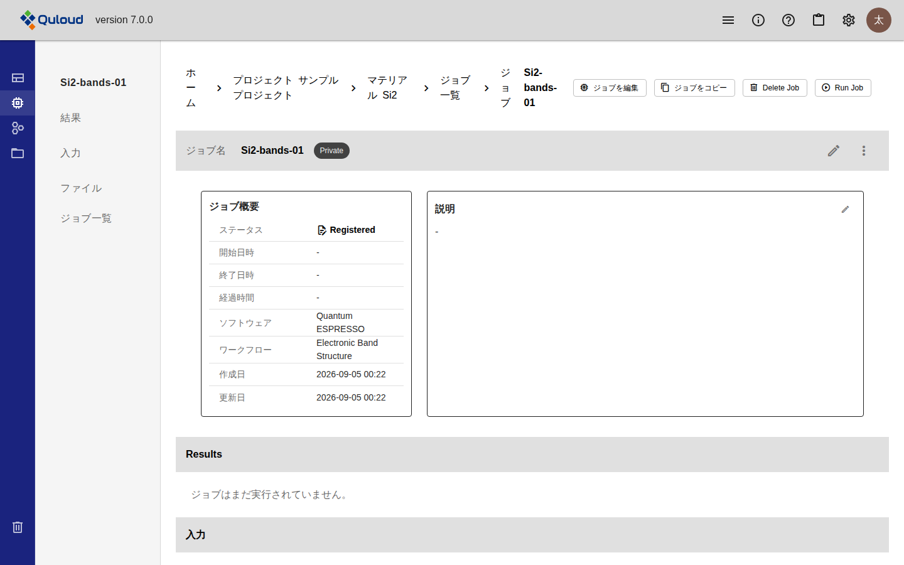
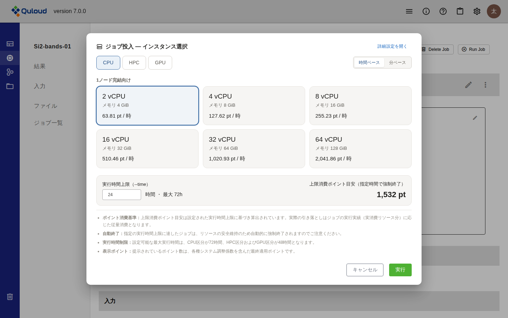
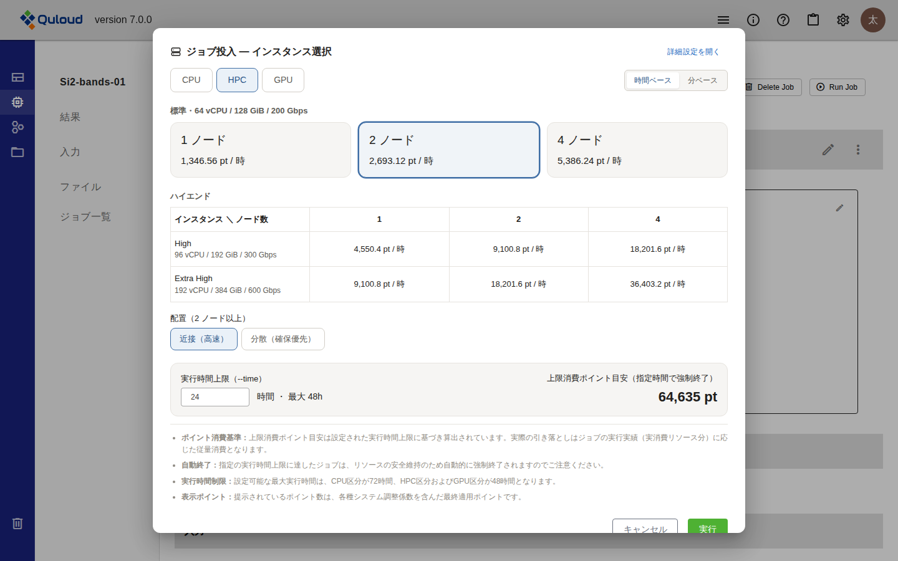
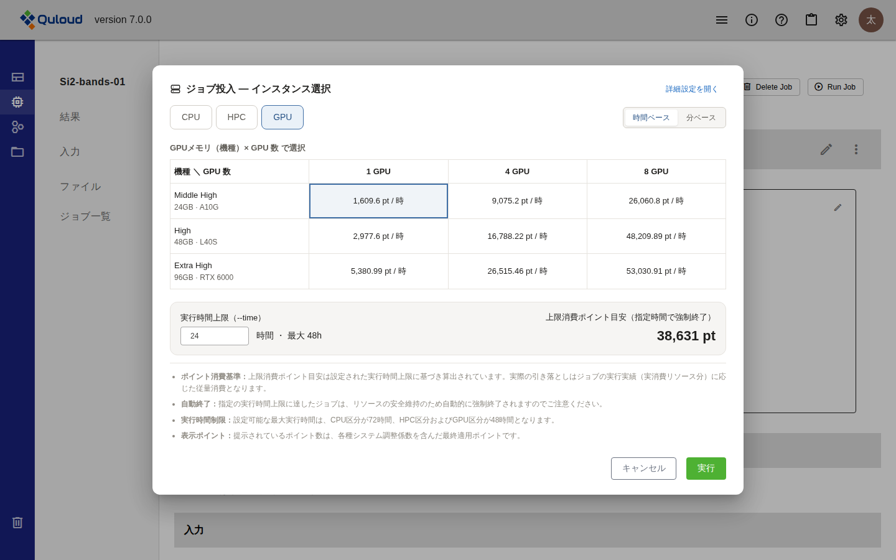
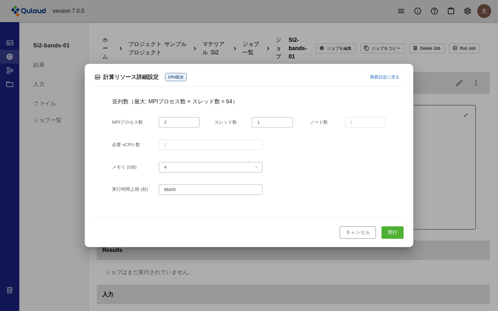
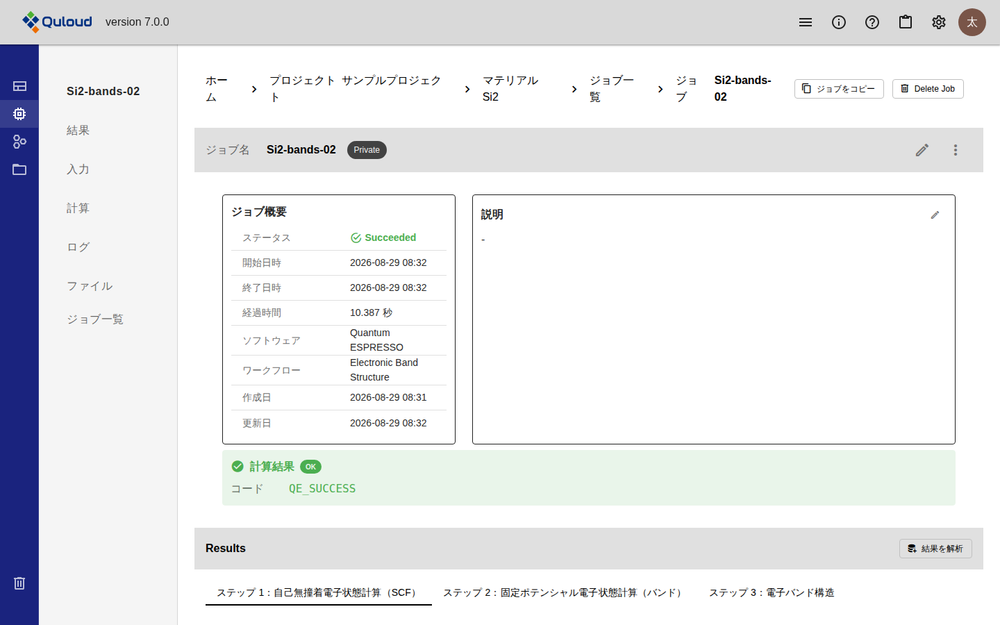
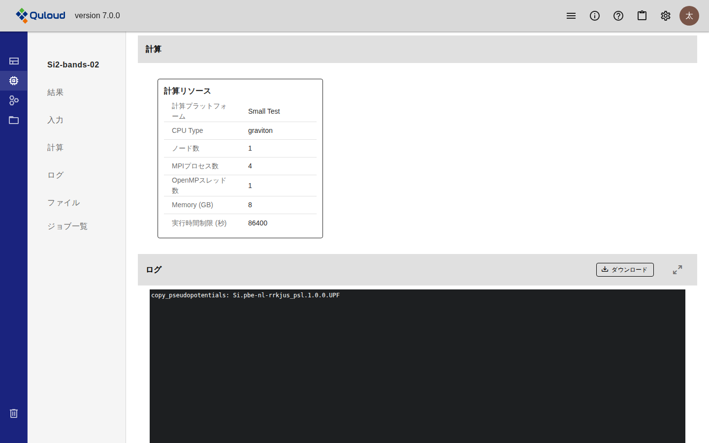

10. 計算 Job の実行
注釈
本章は Quloud Ver.7.0 を対象としています。記載内容の確認日は 2026 年 9 月 8 日です。
10.1. 概要
登録した計算 Job を実行します。手順は 2 段階です。
「Run Job」で計算リソース（CPU / HPC / GPU）と実行時間の上限を選ぶ
「実行」で Job を投入する
実行するとポイントを消費します。消費量の見積もりは投入前のダイアログに表示されます。
注釈
Ver.6.1.2 では、MPI 数・スレッド数・ノード数・計算時間の上限を数値で入力する フォームでした。Ver.7.0 では、あらかじめ用意された構成をカードや表から選ぶ方式に 変わり、選んだ構成の 1 時間あたりのポイント単価と、指定した実行時間での上限消費 ポイントがその場で表示されます。従来どおり数値で指定したい場合は 「詳細設定を開く」から入力できます。
10.2. 前提
実行する Job が登録されていること（計算 Job の登録 の章）。Status が 「Registered」の Job だけが実行できます
テナントが利用制限中でないこと。ポイント残高がない、ストレージの上限を超えている、 契約期間外のいずれかに当てはまると、画面上部に「このテナントは利用制限中です」と 表示され、Job を実行できません
実行に必要なポイントが残っていること（この章の「ポイントの消費」節）
10.3. 操作手順
10.3.1. 1. 実行する Job を開く
Material 詳細画面の左のメニューで「ジョブ」を選び、一覧から Job 名を押します。
Status が「Registered」の Job では、画面右上に「Run Job」が表示されます。

図 10.1 Status が Registered の Job 詳細画面
ジョブ一覧の右端にある「⋮」から「実行」を選んでも、同じダイアログが開きます。
10.3.2. 2. 計算リソースを選ぶ
「Run Job」を押すと「ジョブ投入 — インスタンス選択」ダイアログが開きます。 上部の「CPU」「HPC」「GPU」で区分を切り替え、その中から構成を 1 つ選びます。

図 10.2 「ジョブ投入 — インスタンス選択」ダイアログ（CPU 区分）
各カード・各セルには 1 時間あたりの消費ポイントが表示されます。右上の 「時間ベース」「分ベース」を切り替えると、単価の表示と実行時間上限の単位が 時間と分で入れ替わります。
10.3.2.1. CPU 区分
1 ノードで完結する計算に使います。2・4・8・16・32・64 vCPU の 6 種類から選びます。 メモリは vCPU 数に応じて決まり、2 vCPU で 4 GiB、64 vCPU で 128 GiB です。
10.3.2.2. HPC 区分
複数ノードを使う計算に使います。「標準」（1 ノードあたり 64 vCPU / 128 GiB / 200 Gbps）を 1・2・4 ノード、または「ハイエンド」の 2 種類を 1・2・4 ノードから 選びます。

図 10.3 HPC 区分（2 ノードを選んだ状態）
ハイエンドは次の 2 種類です。
種類 |
1 ノードあたりの構成 |
|---|---|
High |
96 vCPU / 192 GiB / 300 Gbps |
Extra High |
192 vCPU / 384 GiB / 600 Gbps |
2 ノード以上を選ぶと「配置」が現れます。 「近接（高速）」はノードを物理的に 近い位置にまとめて確保するためノード間通信が速くなり、「分散（確保優先）」は 確保しやすさを優先します。
10.3.2.3. GPU 区分
GPU を使う計算に使います。機種（GPU メモリ）と GPU 数の組み合わせを表から選びます。

図 10.4 GPU 区分
機種 |
GPU メモリ |
選べる GPU 数 |
|---|---|---|
Middle High |
24 GB（A10G） |
1 / 4 / 8 |
High |
48 GB（L40S） |
1 / 4 / 8 |
Extra High |
96 GB（RTX 6000） |
1 / 4 / 8 |
10.3.3. 3. 実行時間の上限を決める
ダイアログ下部の「実行時間上限（--time）」に、計算を打ち切るまでの時間を入力します。 上限は区分によって異なります。
区分 |
実行時間上限の最大 |
|---|---|
CPU |
72 時間 |
HPC |
48 時間 |
GPU |
48 時間 |
上限に達した計算は強制終了されます。 途中結果は残りますが、計算そのものは 完了しません。右側の「上限消費ポイント目安」は、選んだ構成の単価にこの時間を 掛けた値です。
10.3.4. 4. Job を投入する
「実行」を押すと Job が投入されます。「ジョブを投入しました。」と表示され、 Status が「Submitted」に変わります。
ポイントの残高が「上限消費ポイント目安」に満たない場合は投入されず、 「実行に必要なポイントが不足しています。」と表示されます。
10.4. 詳細設定
MPI プロセス数・スレッド数・メモリ・実行時間上限（秒）を直接指定する場合は、 ダイアログ右上の「詳細設定を開く」を押します。

図 10.5 計算リソースの詳細設定
直前に選んでいた区分の値が初期値として入ります。区分は右上のバッジで確認できます
「必要 vCPU 数」は MPI プロセス数・スレッド数・メモリから自動で決まります。 直接は入力できません
実行時間上限は秒で指定します。最大は 259200 秒（72 時間）です
「簡易設定に戻る」を押すと、カードや表から選ぶ画面に戻ります
10.5. 結果
投入した Job の Status は、計算の進行に従って次のように変わります。
Status |
状態 |
|---|---|
Registered |
登録しただけで、まだ実行していない状態です。この状態の Job だけが実行できます。 |
Submitted |
計算サーバに投入され、実行の順番を待っている状態です。 |
Prepared |
まれに現れる状態です。計算サーバのノードに異常が起きたときに設定されます。 |
Running |
計算を実行している状態です。 |
Succeeded |
計算が正常に終了した状態です。 |
Failed |
計算が異常終了した状態です。 |
Timeout |
実行時間の上限に達して打ち切られた状態です。 |
Cancelled |
キャンセルされた状態です。 |
Status と実行の時刻は、Job 詳細画面の「ジョブ概要」で確認できます。

図 10.6 正常に終了した Job のジョブ概要
「経過時間」は開始日時から終了日時までの秒数です。Job を投入してから終了するまでの 時間には、計算サーバへの受け渡しや結果の取得にかかる時間も含まれるため、 「経過時間」とは一致しません。
実行時に指定した計算リソースは、左のメニューの「計算」から確認できます。

図 10.7 実行に使った計算リソース
計算結果の見かたは 計算結果の可視化 の章で説明します。
注釈
画面は自動では更新されません。 Status の変化を確認するには、画面を 再読み込みしてください。
10.6. Job のキャンセル
Status が「Submitted」「Prepared」「Running」の Job には、画面右上に 「ジョブをキャンセル」が表示されます。押すと計算サーバ側で計算が打ち切られ、 しばらくすると Status が「Cancelled」に変わります。確認のダイアログは出ません。
ジョブ一覧の「⋮」から「キャンセル」を選んでも同じです。
キャンセルした Job も、実行していた時間の分だけポイントを消費します。
10.7. Job の継続実行
OpenMX の Job に限り、終了した計算の続きから実行し直せます。Status が 「Failed」「Timeout」「Cancelled」の OpenMX の Job には、画面右上に 「Continue Job」が表示されます。
押すと「Run Job」と同じダイアログが開き、計算リソースと実行時間の上限を 選び直せます
元の Job の restart データを引き継ぐため、OpenMX の入力条件は変更できません
継続して実行した Job は別の Job として作られ、Job 詳細画面の「継続履歴」に 継続元との関係が表示されます
継続できない Job では「Continue Job」は表示されません。
10.8. ポイントの消費
Job の実行ではポイントを消費します。残高はヘッダーの「利用情報」（ⓘ）と、 「利用状況」の画面で確認できます（ヘッダーメニュー（各種管理） の章）。
10.8.1. 投入時に確保される分
Job を投入すると、「上限消費ポイント目安」の分がいったん確保されます。確保された 分は、その Job が終わるまで他の Job には使えません。
実行できるかどうかの判定も、この上限の見積もりで行われます。 残高から実行中の Job の確保分を引いた値が上限の見積もりに満たない場合、Job は投入できません。
10.8.2. 終了時に確定する分
計算が終わると、実際に実行した時間に応じた分だけが引き落とされます。上限より早く 終わった場合、確保していた差分は残高に戻ります。
実行時間が 60 秒に満たない場合は、60 秒として計算されます
ディスクの使用に対してもポイントを消費します
10.9. 注意事項
実行時間の上限に達した計算は強制終了されます。 大きな系を計算する場合は、 上限を余裕のある値にしてください。
投入した Job は編集できません。 「ジョブを編集」は Status が「Registered」の Job にだけ表示されます。実行し直したい場合は「ジョブをコピー」で複製し、 複製した Job の入力を変更してください。
実行中の Job は削除できません。 「Delete Job」は Status が「Submitted」 「Prepared」「Running」の間は表示されません。終了した Job は削除できます。
テナントで無効になっている計算ソフトの Job は実行できません。「Run Job」は 押せない状態になり、「利用中のソフトウェアが無効化されています」と表示されます。
計算ソフトごとの制限や既知の問題は 仕様 の章にまとめています。